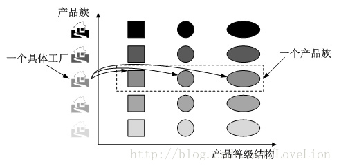

工厂方法模式通过引入工厂等级结构，解决了简单工厂模式中工厂类职责太重的问题，但是由于工厂方法模式中的每一个工厂只生产一类产品，可能会导致系统中存在大量的工厂类，势必会增加系统的开销。我们可以考虑将一些相关的产品组成一个产品族，由同一个工厂来统一生产。
1. 初始设计#
Sunny软件公司欲开发一套界面皮肤库，可以对Java桌面软件进行界面美化。为了保护版权，该皮肤库源代码不打算公开，而只向用户提供已打包为jar文件的class字节码文件。用户在使用时可以通过菜单来选择皮肤，不同的皮肤将提供视觉效果不同的按钮、文本框、组合框等界面元素，

采用工厂模式进行系统设计的结构图如下：

1.1 存在的问题#
- 当需要增加新的皮肤时，虽然不要修改现有代码，但是需要增加大量类，针对每一个新增具体组件都需要增加一个具体工厂，类的个数成对增加，这无疑会导致系统越来越庞大，增加系统的维护成本和运行开销；
- 由于同一种风格的具体界面组件通常要一起显示，因此需要为每个组件都选择一个具体工厂，用户在使用时必须逐个进行设置，如果某个具体工厂选择失误将会导致界面显示混乱，虽然我们可以适当增加一些约束语句，但客户端代码和配置文件都较为复杂。
2. 产品等级结构#
在工厂方法模式中具体工厂负责生产具体的产品，每一个具体工厂对应一种具体产品，工厂方法具有唯一性，一般情况下，一个具体工厂中只有一个或者一组重载的工厂方法。但是有时候我们希望一个工厂可以提供多个产品对象，而不是单一的产品对象，如一个电器工厂，它可以生产电视机、电冰箱、空调等多种电器，而不是只生产某一种电器。
2.1 概念#
- 产品等级结构
即产品的继承结构
- 产品族
指由同一个工厂生产的，位于不同产品等级结构中的一组产品


当系统所提供的工厂生产的具体产品不是一个简单的对象，而是多个位于不同产品等级结构，属于不同类型的具体产品。
抽象工厂模式是所有形式的工厂模式中最为抽象和最具一般性的一种形式。抽象工厂模式与工厂方法模式最大的区别在于，工厂方法模式针对的是一个产品等级结构，而抽象工厂模式需要面对多个产品等级结构，一个工厂等级结构可以负责多个不同产品等级结构中的产品对象的创建。当一个工厂等级结构可以创建出分属于不同产品等级结构的一个产品族中的所有对象时，抽象工厂模式比工厂方法模式更为简单、更有效率。
3. 抽象工厂模式概述#
为创建一组对象提供了一种解决方案，与工厂方法模式相比，抽象工厂模式中的具体工厂不只是创建一种产品，它负责创建一族产品：
抽象工厂模式(Abstract Factory Pattern)：提供一个创建一系列相关或相互依赖对象的接口，而无须指定它们具体的类。抽象工厂模式又称为Kit模式，它是一种对象创建型模式。
在抽象工厂模式中，每一个具体工厂都提供了多个工厂方法用于产生多种不同类型的产品，这些产品构成了一个产品族
3.1 包含的角色#
- Abstract Factory 抽象工厂
声明了一组用于创建一族产品的方法，每一个方法对应一种产品
- Concrete Factory 具体工厂
实现了在抽象工厂中声明的创建产品的方法，生成一组具体的产品，这些产品构成了一个产品族
- Abstract Product 抽象产品
为每种产品声明接口，在抽象产品中声明了产品所具有的业务方法
- Concrete Product 具体产品
定义具体工厂产生的具体产品对象，实现抽象产品接口中声明的业务方法。
3.2 具体实现#
在抽象工厂中声明了多个工厂方法，用于创建不同类型的产品，抽象工厂可以是接口，也可以是抽象类或者具体类，
abstract class AbstractFactory {
public abstract AbstractProductA createProductA(); //工厂方法一
public abstract AbstractProductB createProductB(); //工厂方法二
……
}
具体工厂实现了抽象工厂，每一个具体的工厂方法可以返回一个特定的产品对象，而同一个具体工厂所创建的产品对象构成了一个产品族。
class ConcreteFactory1 extends AbstractFactory {
//工厂方法一
public AbstractProductA createProductA() {
return new ConcreteProductA1();
}
//工厂方法二
public AbstractProductB createProductB() {
return new ConcreteProductB1();
}
……
}
4. 完整方案#


SkinFactory接口充当抽象工厂，其子类SpringSkinFactory和SummerSkinFactory充当具体工厂，接口Button、TextField和ComboBox充当抽象产品，其子类SpringButton、SpringTextField、SpringComboBox和SummerButton、SummerTextField、SummerComboBox充当具体产品。
//在本实例中我们对代码进行了大量简化，实际使用时，界面组件的初始化代码较为复杂，还需要使用JDK中一些已有类，为了突出核心代码，在此只提供框架代码和演示输出。
//按钮接口：抽象产品
interface Button {
public void display();
}
//Spring按钮类：具体产品
class SpringButton implements Button {
public void display() {
System.out.println("显示浅绿色按钮。");
}
}
//Summer按钮类：具体产品
class SummerButton implements Button {
public void display() {
System.out.println("显示浅蓝色按钮。");
}
}
//文本框接口：抽象产品
interface TextField {
public void display();
}
//Spring文本框类：具体产品
class SpringTextField implements TextField {
public void display() {
System.out.println("显示绿色边框文本框。");
}
}
//Summer文本框类：具体产品
class SummerTextField implements TextField {
public void display() {
System.out.println("显示蓝色边框文本框。");
}
}
//组合框接口：抽象产品
interface ComboBox {
public void display();
}
//Spring组合框类：具体产品
class SpringComboBox implements ComboBox {
public void display() {
System.out.println("显示绿色边框组合框。");
}
}
//Summer组合框类：具体产品
class SummerComboBox implements ComboBox {
public void display() {
System.out.println("显示蓝色边框组合框。");
}
}
//界面皮肤工厂接口：抽象工厂
interface SkinFactory {
public Button createButton();
public TextField createTextField();
public ComboBox createComboBox();
}
//Spring皮肤工厂：具体工厂
class SpringSkinFactory implements SkinFactory {
public Button createButton() {
return new SpringButton();
}
public TextField createTextField() {
return new SpringTextField();
}
public ComboBox createComboBox() {
return new SpringComboBox();
}
}
//Summer皮肤工厂：具体工厂
class SummerSkinFactory implements SkinFactory {
public Button createButton() {
return new SummerButton();
}
public TextField createTextField() {
return new SummerTextField();
}
public ComboBox createComboBox() {
return new SummerComboBox();
}
}
引入工具类和配置文件，增强系统的灵活性和可扩展性
import javax.xml.parsers.*;
import org.w3c.dom.*;
import org.xml.sax.SAXException;
import java.io.*;
public class XMLUtil {
//该方法用于从XML配置文件中提取具体类类名，并返回一个实例对象
public static Object getBean() {
try {
//创建文档对象
DocumentBuilderFactory dFactory = DocumentBuilderFactory.newInstance();
DocumentBuilder builder = dFactory.newDocumentBuilder();
Document doc;
doc = builder.parse(new File("config.xml"));
//获取包含类名的文本节点
NodeList nl = doc.getElementsByTagName("className");
Node classNode=nl.item(0).getFirstChild();
String cName=classNode.getNodeValue();
//通过类名生成实例对象并将其返回
Class c=Class.forName(cName);
Object obj=c.newInstance();
return obj;
}
catch(Exception e) {
e.printStackTrace();
return null;
}
}
}
配置文件config.xml中存储具体工厂类的类名
<?xml version="1.0"?>
<config>
<className>SpringSkinFactory</className>
</config>
5. 开闭原则的倾斜性#
Sunny公司使用抽象工厂模式设计了界面皮肤库，该皮肤库可以较为方便地增加新的皮肤，但是现在遇到一个非常严重的问题：由于设计时考虑不全面，忘记为单选按钮(RadioButton)提供不同皮肤的风格化显示，导致无论选择哪种皮肤，单选按钮都显得那么“格格不入”。Sunny公司的设计人员决定向系统中增加单选按钮，但是发现原有系统居然不能够在符合“开闭原则”的前提下增加新的组件，原因是抽象工厂SkinFactory中根本没有提供创建单选按钮的方法，如果需要增加单选按钮，首先需要修改抽象工厂接口SkinFactory，在其中新增声明创建单选按钮的方法，然后逐个修改具体工厂类，增加相应方法以实现在不同的皮肤中创建单选按钮，此外还需要修改客户端，否则单选按钮无法应用于现有系统。
抽象工厂模式无法解决这个问题。在本模式中，增加新的产品族很方便，但是增加新的产品等级结构很麻烦。
- 增加产品族
对于增加新的产品族，抽象工厂模式很好地支持了“开闭原则”，只需要增加具体产品并对应增加一个新的具体工厂，对已有代码无须做任何修改。
- 增加产品等级结构
对于增加新的产品族，抽象工厂模式很好地支持了“开闭原则”，只需要增加具体产品并对应增加一个新的具体工厂，对已有代码无须做任何修改。
6. 总结#
6.1 优势#
- 隔离了具体类的生成，使得更换具体工厂变得容易。所有的具体工厂都实现了抽象工厂中定义的那些公共接口，因此只需要改变具体工厂的实例，就可以在某种程度上改变整个软件系统的行为。
- 当一个产品族中的多个对象被设计成一起工作时，它能够保证客户端始终只使用同一个产品族中的对象。
6.2 劣势#
- 增加新的产品等级结构麻烦，需要对原有系统进行较大的修改，甚至需要修改抽象层代码，这显然会带来较大的不便，违背了“开闭原则”。